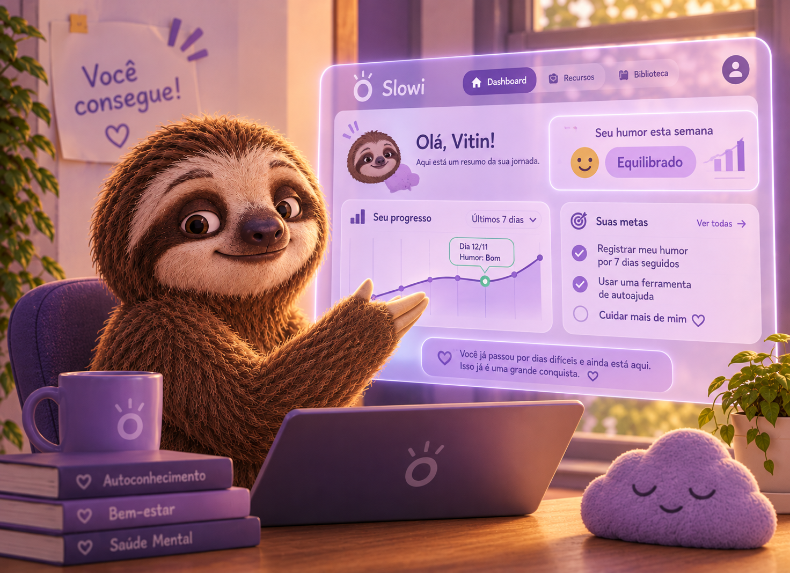

Gráficos
Aqui você pode acompanhar a evolução dos seus registros..
Só você vê o que escreve aqui.Aqui você pode acompanhar a evolução dos seus registros..
Só você vê o que escreve aqui.
17 registros
Na semana anterior foi 3,4.
Ansiedade
Apareceu em 9 registros nos últimos 7 dias
4,7 média da semana
Na semana anterior foi 3,2.
Uma emoção principal escolhida por registro